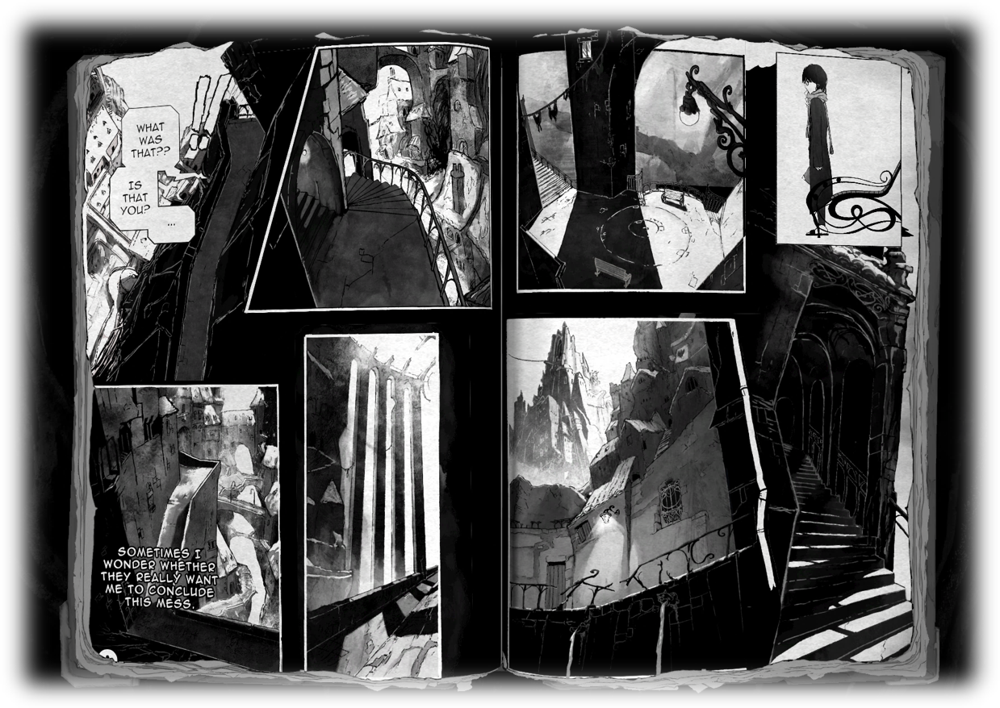
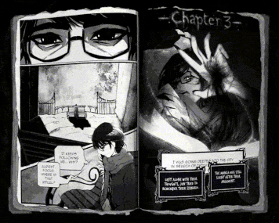
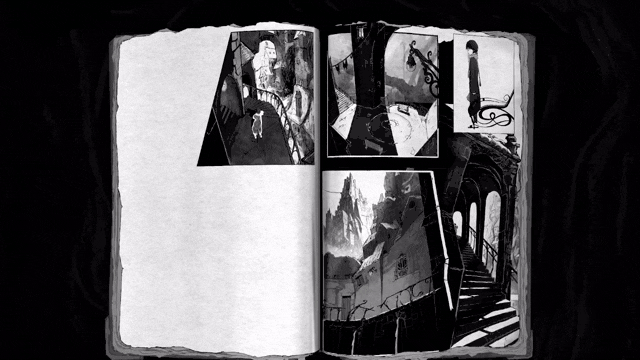

About the game
Yūrei is a psychological horror game set in a manga’s haunted pages.
You play as Jun, a mangaka absorbed by their own book.
Yūrei has been developped over 5 months as an end-of-year project at the Cnam-Enjmin (Angoulême) by 10 2nd year master students.
This is a prototype and a demo of what the game could be.
My Contributions
The main team behind Yūrei is made of 10 people, and we were 2 programmers to work on this project.
My main contribution was the creation and support of a tool inside Unity to help Game Designers, Artists and other teammates to create and edit the manga's pages and layouts.
This tool was made using Unity UI toolkit and helped keeping a flowing production from start to finish.
I also worked on the rest of the project, supporting the system architecture, implementing features and fixing bugs.
Finally I also worked on the menus and their integration directly in the manga
Gallery


